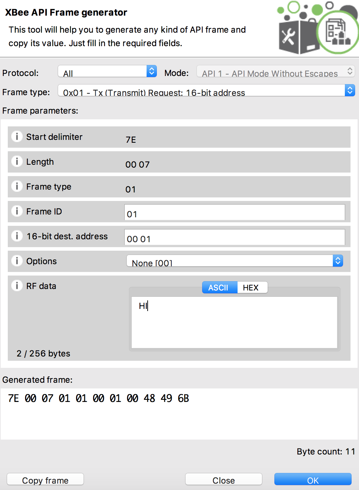

Configuring the XBee devices
-
Launch X-CTU application in your machine. Click on the + sign at the top left corner which opens a window to add XBee devices. Select the COM port on which the XBee device is connected. Leave the settings and click on Finish.

-
Select the newly loaded module from the left pan and wait for the parameters to load in the right pane. Now change the PAN ID to a unique number between 0 and FFFF so that your devices are in a differerent network from others. Note that this PAN ID should be the same for both the XBee devices.

Next is to create addresses for XBee modules. These values should be unique in you network. Assign value 0 for MY 16-bit source address. Since we have only two ZigBee devices we will use 0 and 1 as addresses.
DH and DL are the destination addresses. Leave DH as 0 and set DL to the MY address of the receiving XBee device i.e., 1 in our case.
-
Now scroll down the parameters and under Serial Interfacing, select API enabled[1]>

-
All the changes has to be saved to the device. You can do this either by clicking the pencil icon present at the right of each field or by clicking the pencil icon at the top. Once the changes are saved in the device, the property background will turn from green to blue.

-
Follow same steps for configuring the second XBee device.

Here are the example settings for two XBee devices.
Setting Acronym XBee1 XBee2 Channel CH C C PAN ID ID 5563 5563 Destination Address High DH 0 0 Destination Address Low DL 1 0 16-bit Source Address MY 0 1 -
Lets do a quick test to check the configuration. First click on the Console icon at the top right to change the mode from Configuration to Console mode.

-
Select the first XBee device and in the console window, click on open to open the serial port. Under send frames click the + button to create a frame. Fill the parameters as shown in the image below and click Ok and Add frame.

-
Select the added frame and click on Send selected frame. You should see a TX Request sent in the Frames log.

Now lets write some to send sensor data over XBee.